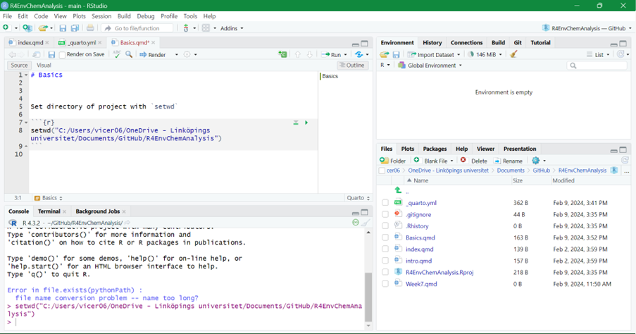

setwd("C:/Users/vicer06/OneDrive - Linköpings universitet/Documents/GitHub/R4EnvChemAnalysis")1 Basics
Set directory of project with setwd
Rstudio consists of four windows, top left is where the Rscript files get opened and where the code can be written and edited, bottom left is where the console can be found for writing commands. In top right can for instance the workspace be seen which shows all created objects and in the bottom right can for instance the the files in the working directory be seen, created plots, loaded packages, etc.

For some functions in R, different packages can be used. For example, to create more complex plots ggplot() function can be used. To be able to use it, the ggplot2 packages needs to be first installed by install.packages("ggplot2") in the console, or by goint to Tools>Install Packages…>search for ggplot2.
Installation of packages only needs to be done ones. To be able to use the functions includes in a package, it needs to be loaded for each new R session by:
library("ggplot2")ggplot2 can also be installed by installing the packages tidyverse, which contains multiple packages and load it with library():
library("tidyverse")── Attaching core tidyverse packages ──────────────────────── tidyverse 2.0.0 ──
✔ dplyr 1.1.4 ✔ readr 2.1.5
✔ forcats 1.0.0 ✔ stringr 1.5.1
✔ lubridate 1.9.3 ✔ tibble 3.2.1
✔ purrr 1.0.2 ✔ tidyr 1.3.1
── Conflicts ────────────────────────────────────────── tidyverse_conflicts() ──
✖ dplyr::filter() masks stats::filter()
✖ dplyr::lag() masks stats::lag()
ℹ Use the conflicted package (<http://conflicted.r-lib.org/>) to force all conflicts to become errorsIf one want to use a function and are not sure which arguments the function requires, one can use args("function name") . Further by using ?"name of function/package/.." , one can read about that certain function or package in the help-tab in the bottom right corner
args(plot) #for the function plot, need to have the arguments x and yfunction (x, y, ...)
NULLargs(round) #function to round numeric vector, the function needs the numeric vector, which can consist of only one numberfunction (x, digits = 0)
NULLx <- 6.02214072
round(x) #by default will round the number to zero digits[1] 6round(x, digits = 3) #can change to how many digits one wants[1] 6.0221.1 Simple commands
Objects is a way to store data in R. Objects can easily be created by using the symbol <-, and that points towards the name of the object. Further, to write comments that can make the written code easier to interpretate # can be used:
#This is a code that creates objects a which contains the sum of 2 + 5
a <- 2 + 5
a[1] 7#It is also possible to assign a vector of numbers to objects as done here for b which contains the numbers 2,3,4,5,6
b <- c(2:6)
b[1] 2 3 4 5 6#Further, it is possible to use addition, subtraction, etc, on objects.
c <- b+a
c[1] 9 10 11 12 13d <- b*a
d[1] 14 21 28 35 42d <- d - 2
d[1] 12 19 26 33 40#Also, it is possible to use matrix operator on vectors
e1 <- b %*% b #inner multiplication
e1 [,1]
[1,] 90e2 <- b %o% b #outer multiplication
e2 [,1] [,2] [,3] [,4] [,5]
[1,] 4 6 8 10 12
[2,] 6 9 12 15 18
[3,] 8 12 16 20 24
[4,] 10 15 20 25 30
[5,] 12 18 24 30 36Important: object names cannot start with a number or contain symbols such as ^, !, $, @, +, -, /, *
#2a <- c(2,4)
#Error: unexpected symbol in "2a"#object! <- c(1:4)
#Error: unexpected '!' in "object!"#However, it is possible to use "_" in an objects name
object_name <- c(5:8)If an new objects is given the same name as an existing objects, the content in the objects will be written over by the new content:
f <- 2+6 #objects f is created which contains the sum of 2+6
f[1] 8f <- c(2,4,6) #object f now has the values 2, 4, and 6
f[1] 2 4 6To avoid writing over existing objects, one can either look in the top-right part of RStudio in the “Environment”-tab to see which names are already in use, or can use the command ls()
ls() [1] "a" "b" "c" "d"
[5] "e1" "e2" "f" "has_annotations"
[9] "object_name" "x" When a script is running and you would like to cancel it, you can press clrl+c
More useful functions:
sum(b) #sums a set of values[1] 20mean(b) #returns the mean values of a set of values [1] 4replicate(n = 3, a+2) #repeats the command (here a+2) n number of times[1] 9 9 9trunc(3.14) #returns only integers of a number[1] 3sample(x = object_name, size = 2, replace = TRUE) #returns random value from x (in this case object_name). size determines number of values to return and replace = TRUE mean the same value can be returned multiple times (if FALSE, will not return same value multiple times)[1] 7 8a1 <- data.frame(a11=1:10,
a12=2:11)
apply(a1[,1:2], 2, mean) #performs specified function (in this case mean) of column 1 and 2 in a1a11 a12
5.5 6.5 apply(a1[,1:2], 1, mean) #performed specified function on each row for the columns 1 and 2 in a1 [1] 1.5 2.5 3.5 4.5 5.5 6.5 7.5 8.5 9.5 10.5sd(b, na.rm=TRUE) #calculate the standard deviation of vector b and ignoers NA values[1] 1.5811391.2 Data types
The main data types in R includes
Numeric ⟹
3.14, 2, 6.022Integer ⟹
2, 3, 4Complex ⟹
4i+5Logical ⟹
TRUE/FALSECharacter ⟹ “x”, “hello”, “RT”
To check if a vector is numeric: is.numeric("data") , returns TRUE if data is numeric (incldues both integers or decimals)
class("data") returns the type of data e.g. numeric
typeof("data") are more specific, e.g. returns double if data contains decimal numbers
If want to change vector to integers can sue as.integer("data")
- Factor ⟹ categorical variable, can be used to divide data according to different levels e.g. data has the categories
influentandeffluent
data <- data.frame(sample_type = as.factor(c("influent", "effluent")), #as.factor can be used to convert the type of sample into factor
RT_min = c(1.1,1.1,2.3,2.3,3.4,3.4),
m_z = c(180, 190, 200, 180, 230, 200))
str(data) #can be used to see structure of data frame'data.frame': 6 obs. of 3 variables:
$ sample_type: Factor w/ 2 levels "effluent","influent": 2 1 2 1 2 1
$ RT_min : num 1.1 1.1 2.3 2.3 3.4 3.4
$ m_z : num 180 190 200 180 230 200Data frame can be used to store data in a table, similar to Excel. Can have different columns with data (in example above, have columns sample_type , RT_min , and m_z ) and the columns contains data in six rows. The columns can contain different types of data, e.g. character , numeric , logical, but they must have the same length.
Can extract a certain part of a data frame by using []
#data[row, column]
data[2] #second columns (RT_min) with all row data RT_min
1 1.1
2 1.1
3 2.3
4 2.3
5 3.4
6 3.4data[2,] #second row, with all column data sample_type RT_min m_z
2 effluent 1.1 190data[,2:3] #column 2 and 3 (RT_min, m_z), all rows RT_min m_z
1 1.1 180
2 1.1 190
3 2.3 200
4 2.3 180
5 3.4 230
6 3.4 200data[4:6, 2:3] #row 4 to 6, for column 2 and 3 RT_min m_z
4 2.3 180
5 3.4 230
6 3.4 200data[1, c("RT_min")] #returns first value for column named "RT_min"[1] 1.1data$RT_min #returns all values from column named "RT_min"[1] 1.1 1.1 2.3 2.3 3.4 3.4data$RT_min[1] <- 1.2 #changes first value of column "RT_min" to 1.2
data$new <- c(1:6) #adds new column "new" to the data with the values 1 to 6To store data with different lengths, can use lists instead.
data_list <- list(sample_type = c("influent", "effluent"),
retention_time = c(1.1, 2.1, 2.4, 3.0, 4.6, 4.8, 5.3),
m_z = c(180, 190, 200, 210))
str(data_list)List of 3
$ sample_type : chr [1:2] "influent" "effluent"
$ retention_time: num [1:7] 1.1 2.1 2.4 3 4.6 4.8 5.3
$ m_z : num [1:4] 180 190 200 210data_list[[1]] #will return first list[1] "influent" "effluent"data_list[[2]][1:4] #returns first 4 values of list 2[1] 1.1 2.1 2.4 3.0data_list[[3]][3] #returns third value from list 3[1] 200If have two objects can compare them with logical tests:
h <- c(1,2,3)
i <- c(2,2,4)
#elementwise comparison
h != i #is h not equal to i, so givs TRUE, FALSE, TRUE[1] TRUE FALSE TRUEh == i #is h equal to i, gives FALSE, TRUE, FALSE[1] FALSE TRUE FALSEj <- 4
j %in% h #is j in h, 4 is not in h[1] FALSEj %in% i #is j in i, 4 is in i[1] TRUEdata$new[data$sample_type=="influent"] <- "is influent" #will write "is influent" on the rows in column "new" is sample_types equals "influentTo check if data has NA
data$new[data$new=="is influent"] <- NA #put "is influent" to NA
is.na(data) #returns TRUE if is has NA sample_type RT_min m_z new
[1,] FALSE FALSE FALSE TRUE
[2,] FALSE FALSE FALSE FALSE
[3,] FALSE FALSE FALSE TRUE
[4,] FALSE FALSE FALSE FALSE
[5,] FALSE FALSE FALSE TRUE
[6,] FALSE FALSE FALSE FALSE1.3 Writing Functions
Instead of using the included functions in R (e.g. plot() ) or in a package (e.g. ggplot() ), it is possible to write your own functions.
To make a function, three parts is needed: name, set of arguments, and body of code and has en general layout as: function_name <- function("set of arguments"){"functions code}
#Function that sums the values in objects "vector" without any set of arguments used
vector <- 1:10
first_function <- function(){
output <- sum(vector)
return(output)
}
first_function()[1] 55#This function does the same, but here an argument "samp" is needed for it to work
second_function <- function(samp){
sum_sample <- sum(samp)
return(sum_sample)
}
second_function(samp=vector)[1] 55#Same type of function again, but here we have an default value for argument "samp", so if the argument is not specifically used, the default it used.
third_function <- function(samp=1:4){
sum_sample <- sum(samp)
return(sum_sample)
}
third_function()[1] 10third_function(samp=vector)[1] 55If one has a written some command and want to make it into a function, R can do that for you if you highlight the commands and press Alt + cltr + x (or code > extract function).
1.4 If Statements/ For Loops
An useful way to write code is to use If statements and For loops.
- In If statements, only if a certain criteria is true, a certain command will happen. In R they have the general form of:
if("criteria"){"command to happen if true"}.
#Only if v1 is smaller than v2 will v3 be created as the sum of v1 and v2
v1 <- 5
v2 <- 10
if (v1<v2) {
v3 <- v1+v2
print(v3)
}[1] 15if (v1>v2) {
v4 <- v1+v2
print(v4)
}
#Returns nothing since statement is not trueIt is also possible to add a “plan B” with if statements by using else{} .
#will return the sum w1 and w2 if the if statment is true, otherwise will take w1-w2
w1 <- 5
w2 <- 10
if (w1>w2) {
w3 <- w1+w2
print(w3)
} else {
w3 <- w1-w2
print(w3)
}[1] -5#Can combine if statments with function. In this case, if input value of x is larger than 0, will return y as y+x*-1
x1 <- 2
y1 <- 3
a_function <- function(x,y){
if (x > 0){
y <- y+x*-1
}
return(y)
}
a_function(x=x1, y=y1)[1] 1- In For loops, certain commands will be repeated for a certain number of times. In R they have the general form of:
for("item in object"){"command as long as item is in object"}.
#The For loop will add the numbers in o1 +1 to the empty vector o2
o1 <- 1:4
o2 <- c()
for (i in o1) {
o2[i] <- i+1
}
o2[1] 2 3 4 5